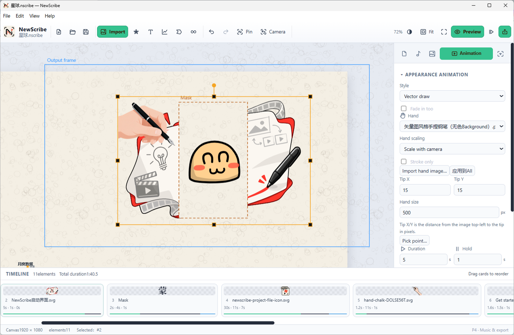

Getting started
Getting started
What NewScribe is, what it does not do, and the first steps of a new project.

NewScribe is a free, local-first whiteboard animation tool. It is inspired by the hand-drawn videos made with Sparkol VideoScribe, but it is an independent application designed around an editable project timeline.
NewScribe is not a video editor. It cannot import video clips, cut video, edit audio, add subtitle tracks, or create transitions. Its job is to turn prepared images, SVG,  text, shapes, charts and audio into a hand-drawn animation. When you need final editing, export an MP4 and finish it in a video editor.
text, shapes, charts and audio into a hand-drawn animation. When you need final editing, export an MP4 and finish it in a video editor.
1. How NewScribe works#
Think of a NewScribe project as a playable set of instructions:
- Place elements on the canvas.
- Give each element an entrance, duration, hold time and exit.
- Set the
 camera position and zoom for the element.
camera position and zoom for the element. - Arrange the order on the timeline.
 Preview the result.
Preview the result. Export an MP4, or
Export an MP4, or  save the project to keep editing.
save the project to keep editing.
The blue frame on the canvas is the final video frame. Anything outside it is not included in the output.
2. Quick start#
A simple first project:
- Import an
 image, SVG or audio file, or add text.
image, SVG or audio file, or add text. - Move, resize and rotate the element.
- Choose an appearance mode on the right.
- Pin the camera if you want a stable shot.
- Set the hold and transition times on the timeline.
- Preview.
- Export an MP4, or save the project.
Keep the first exercise short: one image and one line of text, about five seconds long.
3. Saving and exporting are different#
Saving stores an editable project. Exporting creates a video.
.nscribeis a local working project with an adjacent.assetsfolder..nspkgis a single-file sharing project containing the assets and custom hands..scribeis a VideoScribe project that NewScribe can import, but not save.- MP4 is created by Export video.
The first save opens a format chooser. Ctrl+S saves in the current format; Ctrl+Shift+S opens  Save As;
Save As; Ctrl+E opens Export. NewScribe cannot turn an exported MP4 back into an editable project.